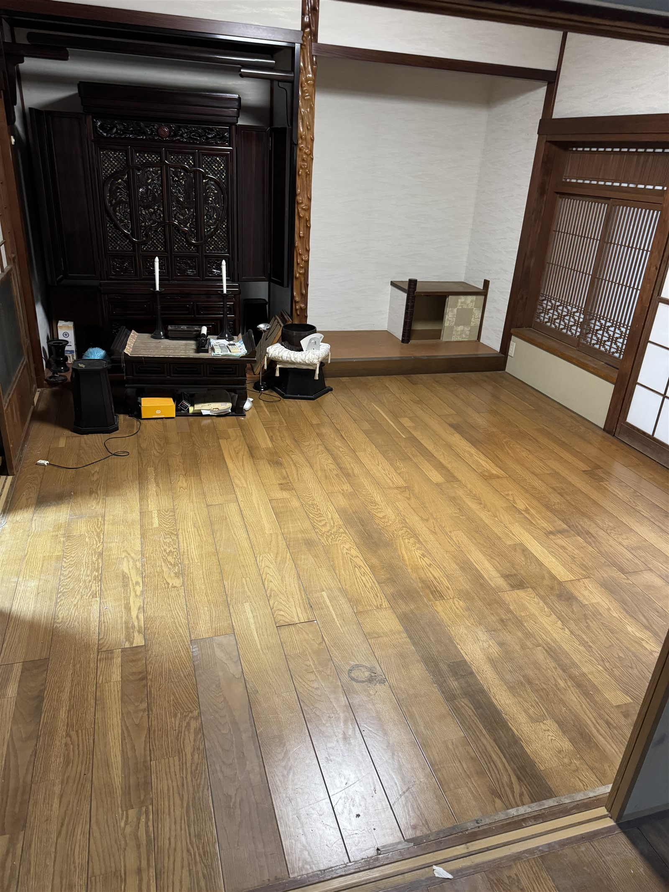
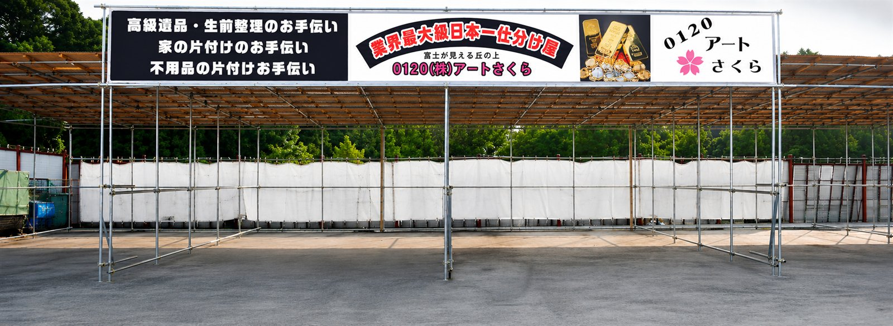

都筑区の遺品整理コラム
横浜市都筑区の遺品整理・実家片付けで困ったときの進め方
横浜市都筑区で遺品整理や実家片付けを進める前に、まず確認しておきたいことをまとめました。何から手をつければよいか分からない方、遠方に住んでいて片付けに行けない方、費用がどのくらいか不安な方に向けて、現場での経験をもとに分かりやすく解説します。
遺品整理は何から始めればいいか迷いやすい
ご家族が亡くなられた後の遺品整理は、急に必要になることが多く、何から手をつければよいか迷う方が少なくありません。横浜市都筑区は、マンション、戸建て、空き家、施設に入居される前後のお部屋など、住まいの形によって相談内容もさまざまです。
遠方に住んでいて都筑区の実家片付けに何度も行けない、費用の目安が分からず相談しづらい、というお声もあります。まずは残すもの、確認が必要なもの、手放してよいものを分けながら、無理のない順番で進めることが大切です。
まず大切なのは、残すもの、確認が必要なもの、手放してよいものを分けることです。一度にすべてを終わらせようとせず、順番に整理していくことで、気持ちの面でも進めやすくなります。
このページでは、都筑区で遺品整理や実家片付けを進める前に知っておきたいポイントを、現場での経験をもとにまとめました。親が元気なうちに整理を始めたい方は、横浜市都筑区で生前整理を始めるには？実家片付け・施設入居前の整理も解説も参考にしてください。
都筑区で遺品整理の相談が増えるケース
都筑区にお住まいの方、またはご実家が都筑区にある方からは、次のようなご相談をよくいただきます。
- 実家が都筑区にあり、離れて暮らす家族だけでは片付けが進まない
- 親族が遠方に住んでいて、何度も現地に来るのが難しい
- 相続や住み替えにともない、空き家になった家を整理したい
- 施設への入居が決まり、期限までに家財整理を終わらせたい
- 賃貸やマンションの明け渡し期限が決まっている
どのケースも、状況が違えば進め方も変わります。まずはご自身の状況に近いものを確認しておくと、相談する際にも話がしやすくなります。
最初に確認しておきたいもの
作業を始める前に、次のようなものがないか確認しておくと安心です。
- 通帳、印鑑、保険証券、契約書類
- 写真、手紙、形見の品
- 貴金属、時計、カメラ、骨董品
- 家電、家具、衣類、書籍

これらを先に確認しておくと、必要なものと手放すものを分ける作業がスムーズになります。特に通帳や印鑑、契約書類などは見落としやすいため、最初に確認しておくことをおすすめします。写真や手紙、形見の品は、家族で確認しながら残すものを決めていくとよいでしょう。
写真で相談するときに送るもの
写真で相談する場合は、部屋全体、押し入れや収納の中、大型家具・家電、玄関や廊下などの搬出経路が分かる写真があると、状況を確認しやすくなります。
マンションの場合は、エレベーターや共用部分の様子も分かる範囲で撮っておくと、搬出の段取りを考えやすくなります。写真がすべて揃っていなくても、まずは分かる範囲でご相談ください。
迷ったら、室内の写真を送って進め方を相談できます。
LINEで写真を送って相談する家財が多い場合の進め方
家財の量が多い場合は、次のような順番で進めると負担を抑えやすくなります。
- 部屋ごとに進める（一度にすべての部屋を対象にしない）
- 重要書類や思い出の品を先に確認する
- 大型家具や家電は、搬出経路や階段の有無を確認しておく

すべてをその場で判断しようとすると、時間がかかり負担も大きくなります。回収した品物を自社の作業場に運び入れ、時間をかけて仕分けできる体制があると、現場での作業時間や依頼者の負担を抑えやすくなります。
マンション・戸建て・空き家で気をつけること
マンションの場合
エレベーターの有無や大きさ、共用部の養生、作業できる時間帯の制限を事前に確認しておくと、当日の進行がスムーズになります。
戸建ての場合
2階からの搬出は階段の角度や幅によって時間がかかることがあります。庭や物置に残った荷物も、忘れずに確認しておきましょう。
空き家の場合
長期間そのままになっている家財が多いことがあります。立ち会いの回数を減らしたい場合や、近隣への配慮が必要な場合も、事前に相談しておくと安心です。
リユース・リサイクル・資源化について
遺品整理や実家片付けで出てくる家財のすべてを、ただなくす必要はありません。まだ使えるものはリユースに回し、素材として活かせるものは資源化することで、次に活かせる形へつなげることができます。

状態のよい家具・家電・貴金属などは、買取につながる場合もあります。「まだ使えるものを次に活かしたい」という気持ちがある場合は、仕分けの段階でその旨を伝えておくとよいでしょう。
費用が変わる主なポイント
遺品整理や実家片付けの費用は、部屋の広さだけで決まるものではありません。家財の量、仕分けの量、階段やエレベーターの有無、玄関や廊下などの搬出経路によっても変わります。
また、買取・リユースできる品があるかどうかでも、最終的な負担が変わる場合があります。写真または現地で状況を確認したうえで、作業内容と費用の目安をご案内します。
業者に相談するタイミング
次のような状況にあてはまる場合は、早めに業者へ相談することをおすすめします。
- 家財の量が多く、自分たちだけでは進めるのが難しい
- 明け渡しや入居などの期限が決まっている
- 遠方に住んでいて、何度も現地に行くのが難しい
- 大型家具や家電が多く、搬出の見通しが立たない
- 何を残せばよいか、自分たちだけでは判断しづらい
見積もりの相談だけでも構いません。状況を聞いたうえで、進め方や注意点を一緒に整理していくことができます。
アートさくらが都筑区で対応できること
- 神奈川本社が横浜市都筑区池辺町にあり、都筑区内へ伺いやすい体制です
- 回収から仕分け、リユース、リサイクル、資源化まで自社で一貫対応します
- 約500坪の自社作業場を保有し、時間をかけて仕分けを行えます
- 買取、リユース、リサイクル、資源化まで、まとめてご相談いただけます
- 大量の家財整理、戸建て、空き家、施設入居前後の片付けにも対応しやすい体制です

対応エリア
横浜市都筑区全域に対応しています。下記は対応エリアの一例です。
- センター北
- センター南
- 仲町台
- 北山田
- 東山田
- 都筑ふれあいの丘
- 川和町
- 中川
- 荏田南
- 茅ケ崎中央
- 池辺町
- 折本町
- 大熊町
- 牛久保周辺
よくある質問
都筑区で遺品整理をするとき、何から準備すればいいですか。
まずは、残すもの・確認が必要なもの・手放してよいものを大まかに分けることから始めると進めやすくなります。通帳や印鑑、保険証券などの重要書類、写真や手紙といった思い出の品は、最初に確認しておくと安心です。事前に準備しておきたいものの詳しい一覧は、本文の「最初に確認しておきたいもの」でもご紹介しています。
遠方からでも都筑区の実家片付けを相談できますか。
ご相談いただけます。お電話やLINEで写真をお送りいただければ、都筑区の実家片付けについて概算のご案内をしながら、進め方を一緒に考えることができます。
買取やリユースの相談はできますか。
可能です。状態のよい家具・家電・貴金属などがあれば、仕分けの際にあわせて確認し、買取やリユースにつなげられるかどうかをご案内します。
貴重品や思い出の品を探してもらえますか。
探したい品がある場合は、事前に特徴や保管されていそうな場所をお聞かせください。仕分けの中で確認できたものは分けてご案内します。すべてを確実にお約束することはできませんが、大切なものを見落とさないよう、できる限り丁寧に確認しながら進めます。
空き家になった実家の片付けや売却先の相談もできますか。
空き家になったご実家の片付けもご相談いただけます。家財を整理したあと、「売るか、貸すか、そのままにするか」で迷われる場合は、必要に応じて相談できる不動産会社をご紹介できます。
見積もりだけでも相談できますか。
もちろんご相談ください。写真または現地で状況を確認したうえで、作業内容と料金の目安をご説明します。ご依頼いただくかどうかは、内容をご確認いただいてから判断いただけます。
見積もり後に断ることはできますか。
はい、断っていただいて構いません。お見積もりの内容やご依頼のタイミングは、ご家族でゆっくりご検討ください。気になる点があれば、作業範囲や進め方を調整できるかも含めてご相談いただけますし、無理に契約を進めることはありません。
詳しい料金や作業内容はこちら
都筑区の遺品整理・実家片付けの料金目安や作業事例、よくある質問は、詳しいご案内ページで確認できます。